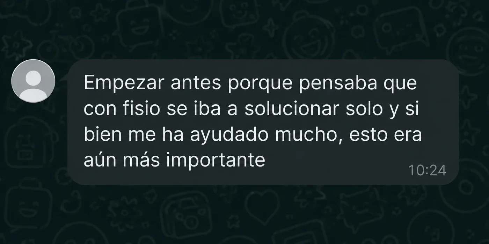
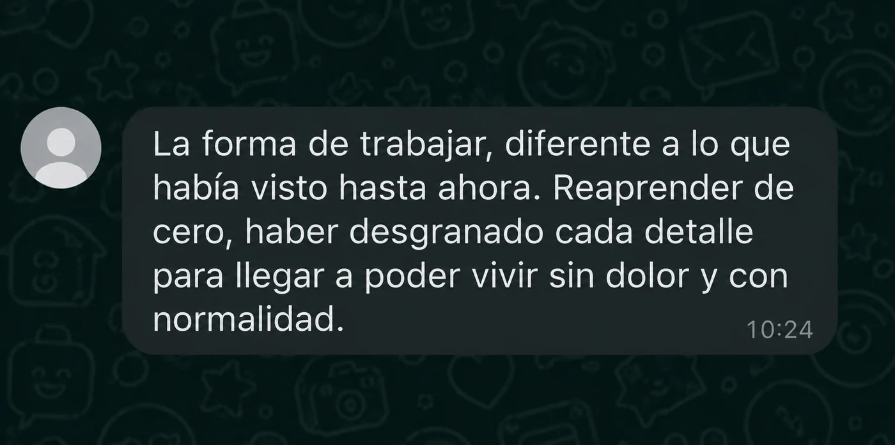
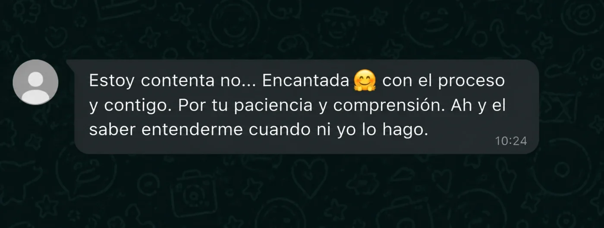
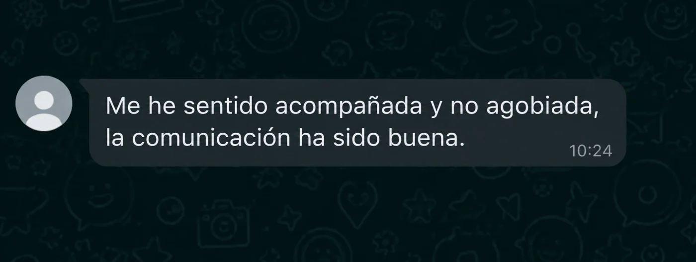
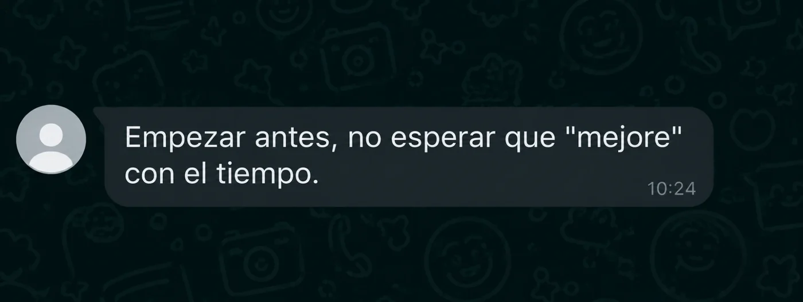

Cómo entrenar CrossFit sin que tu suelo pélvico pague las consecuencias
Por qué las pérdidas de orina, el dolor lumbar o la diástasis no son "normales" cuando entrenas — y qué hacer en cada caso.

Plazas limitadas para la llamada de valoración
Mensajes reales de mujeres que ya han hecho SPC


Algunas personas que aplicaron el método SPC cuentan su experiencia

Historia de Leti: cómo afronta su entrenamiento de crosstraining embarazada

Historia de Eva: con la lesión que tengo, me ha sorprendido estar sin dolor

Alejandra Cortés: CrossFit, embarazo, posparto y cesárea. Realidades y mitos

Historia de Alberto: dolor pélvico «crónico»
Lo que más me preguntan antes de empezar
Ya he ido a fisio de suelo pélvico. ¿Esto no va a ser lo mismo?
No. Y de hecho, que ya hayas ido es un punto a favor: significa que lo que te falta es algo distinto, no más de lo mismo. En fisio normalmente se trabaja la zona de forma aislada y desde la consciencia: aprieta, contrae, cierra. Aquí no vas a apretar nada. Analizamos qué recursos tiene tu cuerpo y cuáles le faltan, y los desarrollamos con entrenamiento, dentro de tu movimiento real.

¿Esto es otro programa de ejercicios como los que ya he probado?
No son ejercicios sueltos. Es una valoración de tu cuerpo, una programación que se construye solo para ti y que cambia cada semana, y alguien contigo durante el proceso ajustándola según cómo te va yendo.

Yo ya he fallado otras veces. ¿Y si no soy constante?
Lo que has hecho hasta ahora eran deberes sueltos: un vídeo, tú sola, sin nadie detrás y sin ver resultados. Eso lo abandona cualquiera. Aquí tienes estructura, tienes a alguien al otro lado cada semana y, si una semana no puede ser, se ajusta. No hay látigo.

¿Funciona de verdad siendo online?
Trabajo solo online, y no por comodidad. En presencial te veo una o dos horas a la semana y del resto no sé nada. Online sé cómo has dormido, cómo te ha ido el WOD del martes y si estás premenstrual, y puedo ajustarte la semana el mismo día que me lo cuentas.

¿Es caro? ¿Merece la pena ahora?
Aquí lo que pagas no son sesiones: es que alguien esté dentro de tu semana durante tres meses. Y una cosa que me dicen mucho: lo caro acaba siendo el tiempo que se pasa esperando a que mejore solo.
Esto me lo dicen mucho en las llamadas. Una me dijo: «tener a una persona a tu lado se tiene que pagar, no me parece caro». Otra, que es autónoma: «no tienes que justificarte». Y otra directamente me dijo que le parecía poco para todo el trabajo que es.
